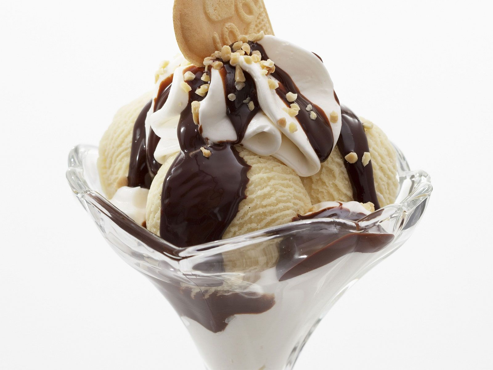

Dame blanche
Een Dame Blanche is het beste nagerecht na een goede avond in een restaurand of een luxe avond thuis.
- Slagroom
- Chocolade
- Suiker
- Een paar bolletjes slagroomijs
- verwarm de slagroom tot het kookpunt
- zet dan het vuur uit en roer de fijngehakte chocolade er door.
- Roer net zo lang totdat je een mooie gladde donkere saus hebt.
- Klop de slagroom met de suiker stijf en maak de ijscoupes op met enkele bolletjes slagroomijs en slagroom.
- Giet er aan tafel de warme chocoladesaus over. Tip: Probeer chocolade te bemachtigen van 60% of liever nog 70% cacao.

Tip Heerlijk na een lekker luxe hoofdgerecht.